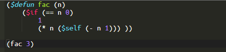
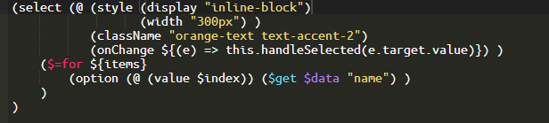

(Liyad)
Lisp yet another DSL interpreter
Liyad is very small Lisp interpreter written in JavaScript.
Let's make your yet another DSL with Lisp S-expression!

Liyad provides JavaScript APIs to customize all operators and macros.
You can easily and quickly build a new DSL you want to need.
Liyad's production build is only less than 100KB.
Liyad is written in pure JavaScript that running on both server side (Node.js) and modern browsers (Chrome, Firefox, Safari, Edge).
(LSX)
Alternative JSX notation using Lisp
More simple, more beautiful, and more powerful!

Liyad uses ES6 template literal syntax. You don't pass the entire code to transpile and evaluate it. Save your coding times.
No host environment's symbols are accessible from evaluated user contents by default. Malicious codes can not make a serious attack.
What you can do with JSX can be done with LSX. Plus, LSX itself is a complete data description format and is a complete programming language, so you can write more concise and powerful.